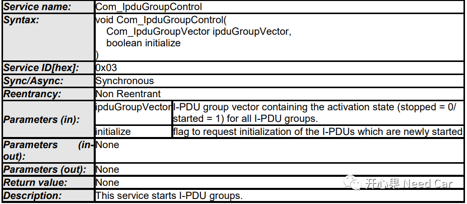
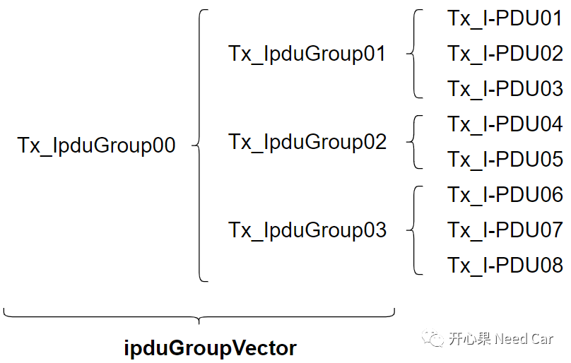
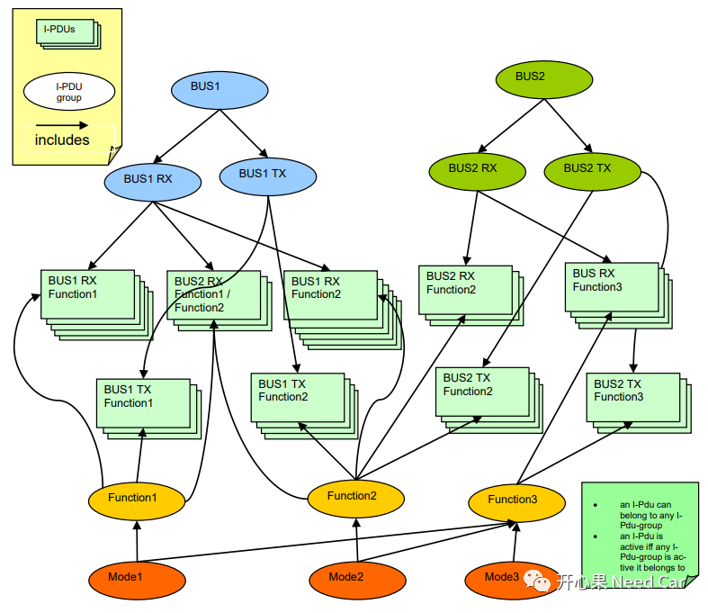
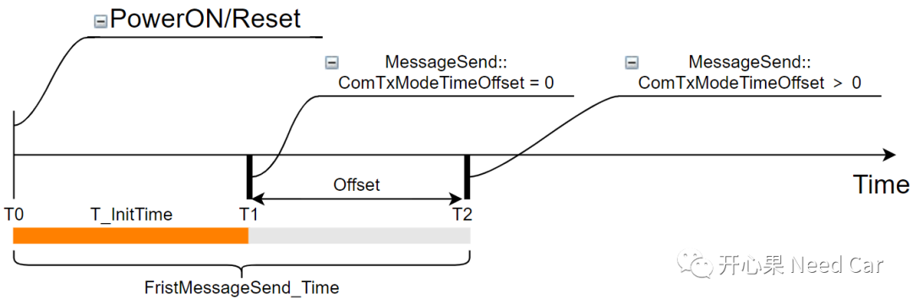
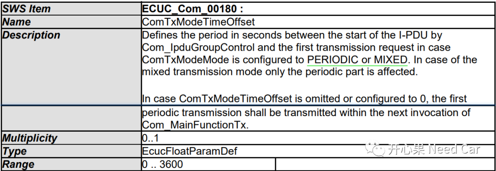
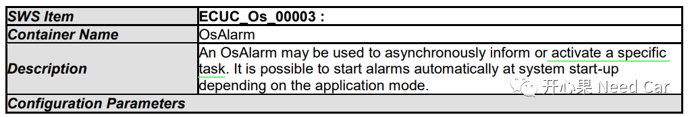

开心果 Need Car · 2022-04-15T19:23:00+08:00 · 微信原文
汽车嵌入式开发中，具有周期性外发的报文目前只有网络管理报文和应用报文，当通信开启的时候，这两种类型的报文谁先外发呢？本文从需求角度，聊聊这两种报文到底该谁应该先发送，谁应该后发送。
为了便于对应用报文的管理，COM层将发送和接收的I-PDU进行分组处理（分组情况根据需求配置）。COM通过Com_IpduGroupControl()接口具体的控制I-PDUs的收/发行为。
Com_IpduGroupControl()函数原型如下所示：

以控制Tx PDU为例，ipduGroupVector、IpduGroup、I-PDU关系如下所示：

再看看Autosar怎么描述IpduGroup、I-PDU关系的，如下所示：

有点晕？没关系，咱们简单说说：
一个I-PDU可以放在一个IpduGroup里，也可以放在多个IpduGroup里；
一个I-PDU既可以放在Rx IpduGroup里，也可以放在Tx IpduGroup;
一个I-PDU所在的任意一个IpduGroup激活，此I-PDU的收/发行为被激活。
首先，需要明确当前Node的网络类型，如果当前Node的网络类型是Active的，Node可以外发网络管理报文，那么就需要明确一下两者谁先发送的问题了。为了快速的唤醒网络，需求中多数会要求“外发的第一帧报文是网络管理报文”，且会有时间约束，比如：150ms＋10%。这个话题前面我们有提到过，可以回顾前文Autosar网络管理：确保第一帧是网络管理报文方法。
如果当前Node的网络类型是Passive的，意味着本Node不会外发网络管理报文，只能接收网络管理报文。所以，此种情况，就只有应用报文先外发，即使是应用报文，第一帧报文的外发时间也是有约束的，比如：100ms＋10%。刚才我们提到Com_IpduGroupControl()控制应用报文的外发行为，当然COM层也管控着应用报文的外发时机，即：配置参数ComTxModeTimeOffset。不要忽视此参数的配置，如果ComTxModeTimeOffset ＞0，意味着应用报文的外发时机要Offset，如下所示：

ComTxModeTimeOffset具体作用如下所示，可以看出，ComTxModeTimeOffset作用于PERIODIC or MIXED两种类型的应用报文。


拓展思考
参考资料
AUTOSAR_SWS_COM.pdf
AUTOSAR_SWS_OS.pdf
往期精彩回顾